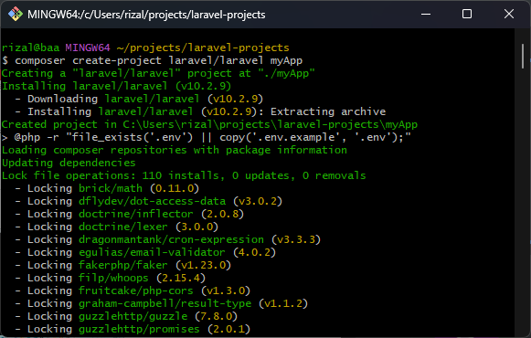

Composer adalah manajer depency untuk PHP yang memungkinkan pengelolaan paket dan library secara
efisien dalam proyek. Dengan Composer, Anda dapat:
Menambahkan dan mengelola paket-paket PHP dalam proyek Anda.
Mendefinisikan ketergantungan dan versi paket yang dibutuhkan.
Memperbarui paket dengan mudah sesuai kebutuhan proyek.
Menggunakan autoloading untuk memuat class secara otomatis.
Composer menggunakan file composer.json untuk mendefinisikan ketergantungan proyek PHP.
Dengan menggunakan perintah sederhana, Composer secara otomatis mengelola unduhan, instalasi, dan
penyesuaian paket-paket yang diperlukan.
Apabila Anda bekerja pada proyek PHP, memahami dan menggunakan Composer dapat mempermudah pengelolaan dan
pemeliharaan proyek secara keseluruhan.
Instalasi dan Konfigurasi
Untuk dapat menginstal composer pastikan
kamu telah menginstal php
cara ceknya adalah dengan membuka cmd/terminal, lalu ketikan perintah seperti berikut
php -v
berikut adalah output jika dalam komputer telah terinstal php
Langkah-langkah instalasi dan konfigurasi Composer:
Buka halaman resmi composer, lalu pergi ke menu download, atau bisa langsung klik link berikut: download
composer
Spesial untuk windows instalasi composer bisa dilakukan dengan mendownload file exe. dengan cara
meng-klik text yang pada gambar di atas dikotaki merah.
ketika file 'Composer-Setup.exe' telah selesai didownload, buka file tersebut.
Pertama ini adalah tampilan awal, direkomendasikan untuk memilih opsi 'install for all
user'.
Kedua, unchecked developer mode , lalu klik next.
Ketiga, masukkan path ke tempat kamu mengistal php, jika sudah klik next.
Lalu, biarkan unchecked dan kosong, dan langsung klik next.
Selanjutnya, jika semuanya sudah sesuai, klik install.
Instalasi telah selesai.
Cara lain untuk instal composer adalah dengan "command-line installation" cara ini bisa dilakukan di
cmd/terminal. copy text yang dikotaki merah pada gambar di bawah lalu paste-kan di terminal/cmd.
Baik instalasi dengan cara pertama maupun cara kedua, untuk mengecek apakah composer telah terinstal di komputer kita atau belum caranya adalah dengan membuka cmd/terminal lalu ketikan perintah
composer -V
Seperti ini output jika composer telah terinstal
Instalasi laravel dengan composer
Nah composer ini bisa digunakan untuk menginstal laravel. Apa itu laravel? Laravel adalah sebuah kerangka kerja (framework) PHP open-source yang menyediakan beragam modul dasar untuk meningkatkan performa PHP saat membangun aplikasi web. Karena PHP sendiri adalah bahasa pemrograman yang dinamis, penggunaan Laravel dapat mempercepat, memperkuat keamanan, dan menyederhanakan proses pengembangan web.
Langkah-langkah laravel dengan composer
Buka cmd/terminal, lalu ketik:
composer create-project laravel/laravel your-project-name
Nah, your-project-name bisa diganti sesuai keinginan, misalnya:
composer create-project laravel/laravel myApp
Selanjutnya, tunggu hingga prosesnya selesai

Jika berhasil, tampilannya akan seperti ini
Setelah itu pindah folder, cara-nya
cd your-project-name
Untuk menjalankan server ketikan
php artisan serve
outputnya seperti berikut
Terakhir, untuk membuka servernya ketikan link https://127.0.0.1:8080/ di browser, dan tadaaaa...berhasil